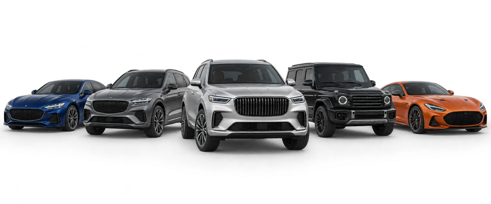

Подбор
Уточняем модель, бюджет и важные параметры. Рассматриваем доступные варианты и согласуем подходящий автомобиль.
Подберём и организуем доставку автомобиля под ваш запрос.
Смотреть каталог в MAX↗Ваш новый автомобиль начинается с выбора
Изображения автомобилей иллюстративны. Наличие конкретных моделей уточняется индивидуально.
Покупка за границей состоит из нескольких отдельных решений: какую машину выбрать, что известно о её состоянии, сколько составят все расходы и как она попадёт к вам. Поможем собрать эти вопросы в один понятный план.
Уточняем модель, бюджет и важные параметры. Рассматриваем доступные варианты и согласуем подходящий автомобиль.
Изучаем доступные документы, историю и сведения о состоянии. Объём проверки зависит от автомобиля и источника данных.
Обсуждаем порядок покупки, доставки и оформления. Сообщаем о ключевых этапах и необходимых действиях.
Последовательность и конкретные условия фиксируются по вашему запросу и выбранному автомобилю.
Вы рассказываете, какой автомобиль нужен, какой бюджет рассматриваете и что для вас важно.
Сравниваем предложения и доступные сведения. Отдельно обсуждаем ограничения и вопросы по каждому варианту.
Готовим индивидуальный расчёт и порядок действий. Покупка начинается после вашего решения.
Сопровождаем согласованные действия по приобретению, доставке и оформлению автомобиля.
Стоимость автомобиля за рубежом — только часть бюджета. Итоговый расчёт зависит от выбранной машины, страны покупки, маршрута, валютного курса и обязательных платежей.
Получить расчёт ↗Расчёт носит предварительный характер до согласования конкретного автомобиля и условий сделки.
Хорошее решение начинается
с правильных вопросов.
Точный бюджет зависит от конкретного автомобиля и условий покупки. После обсуждения вашего запроса подготовим индивидуальный предварительный расчёт с основными статьями расходов.
Срок зависит от страны покупки, маршрута, наличия автомобиля, оформления и работы перевозчиков. Ориентир обсуждаем после выбора варианта; точную дату заранее не гарантируем.
Состав проверки определяется по конкретному предложению: изучаем доступные документы, историю и данные о состоянии. Сообщаем, какие сведения удалось подтвердить, а какие остаются неизвестными.
Только после того, как вы рассмотрите выбранный вариант и согласуете условия. Порядок платежей и обязанности сторон нужно закрепить в документах до оплаты.
Напишите в MAX, какой автомобиль рассматриваете и какой бюджет планируете.
Откройте чат в MAX и расскажите, какую машину ищете.
Написать в MAX ↗Переход на внешний сервис MAX